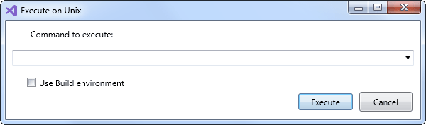

On the Tools menu, click Execute on Unix.
The Connect dialog box opens if you were not connected to Unix.

In this case, in the User Name box, type your Unix user name.
In the Password box, type your Unix user password.
Click OK.
The Execute on Unix dialog box opens.

In the Command to execute list, type or select the name of the command to execute, such as cd, ls, ps -ef, ok mkmk.
If you want to run a command such as mkmk or mkrun that requires to use the installed RADE build environment in the Unix computer, check Use Build environment.
Click Execute.
The command is executed.